| Übersicht | ||
| 1. | Hauptsignale | H |
| 2. | Vorankündigungssignale | V |
| 3. | Fahrsignale | F |
| 4. | Abfertigungssignale | A |
| 5. | Zugsignale | Z |
| 6. | Geschwindigkeitssignale | G |
| 7. | Schutzsignale | Sh |
| 8. | Rangiersignale | R |
| 9. | Schaltsignale | St |
| 10. | Weichensignale | W |
| 11. | Überwachungssignale für Bahnübergänge | Bü |
| 12. | Sondersignale | So |
| Bezeichnung | Signalbild | Bedeutung | Erläuterung |
| H 0 | Ein rotes Licht | Halt | |
| 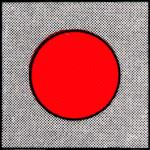 | |||
| H 1 | Ein grünes Licht | Fahrt | Signale H 1 und H 2 können auch in Verbindung mit Geschwindigkeitssignalen G 2 gegeben werden |
 | |||
| H 2 | Ein grünes über einem gelbem Licht | Fahrt mit Geschwindigkeitsbeschränkung | |
| 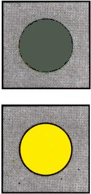 |
| Bezeichnung | Signalbild | Bedeutung | Erläuterung |
| V 0 | Zwei gelbe Lichter nach rechts steigend | Am folgenden Hauptsignal ist Halt zu erwarten | |
| 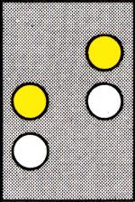 | |||
| V 1 | Zwei grüne Lichter nach rechts steigend | Am folgenden Hauptsignal ist Fahrt zu erwarten | |
 | |||
| V 2 | Ein grünes und ein gelbes Licht von links nach rechts stärker steigend | Am folgenden Hauptsignal ist Fahrt mit Geschwindigkeitsbeschränkung zu erwarten | |
 |
| Bezeichnung | Signalbild | Bedeutung | Erläuterung |
| F 0 | Ein weißer waagerechter Lichtbalken | Halt | |
 | |||
| F 1 | Ein weißer senkrechter Lichtbalken | Fahrt freigegeben nur geradeaus | |
 | |||
| F 2 | Ein weißer schräg nach rechts oben weisender Lichtbalken | Fahrt freigegeben nur nach rechts | |
| 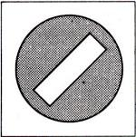 | |||
| F 3 | Ein weißer schräg nach links oben weisender Lichtbalken | Fahrt freigegeben nur nach links | |
 | |||
| F 4 | Ein weißer Lichtpunkt | Halt zu erwarten | |
| 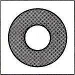 | |||
| F 5 | Ein weißes Lichtdreieck mit Spitze nach unten | Fahrt freigegeben unter Beachtung der Abbiegeregeln nach § 9 Straßenverkehrs-Ordnung | |
| 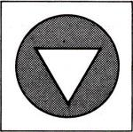 |
| Bezeichnung | Signalbild | Bedeutung | Erläuterung |
| A 1 | ein weiß- oder gelbleuchtendes T | Türen schließen | |
| 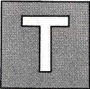 | |||
| A 2 a | Ein kurzes akustisches oder ein optisches oder ein akustisches und ein optisches Zeichen | Abfahren | |
| A 2 b | Ein weiß- oder grünleuchtender Ring | ||
| 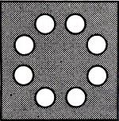 |
| Bezeichnung | Signalbild | Bedeutung | Erläuterung |
| Z 1 | An der Spitze eines Zuges drei weiße Lichter | Spitzensignal | Die Stirnleuchte des Spitzensignals kann die Linienbezeichnung enthalten |
| 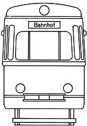 | |||
| Z 2 | Am Zugschluß zwei rote Lichter | Schlußsignal | |
| 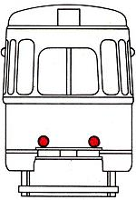 | |||
| Z 3 | Am Zugschluss zwei rote Lichter | Bremssignal | |
 | |||
| Z 4 | Gelbe Blinklichter an einer der beiden Längsseiten | Fahrtrichtungssignal | |
 | |||
| Z 5 | Gelbe Blinklichter gleichzeitig an beiden Längsseiten | Warnblinksignal | Zeigt an, daß der Zug liegengeblieben ist |
 |
| Bezeichnung | Signalbild | Bedeutung | Erläuterung |
| G 1 a | Eine dreieckige, auf der Spitze stehende gelbe Tafel mit weißem Rand und schwarzer Kennziffer | Ankündigung der Geschwindigkeitsbeschränkung | Geschwindigkeitsbeschränkung ist jede Änderung der zulässigen Geschwindigkeit nach unten |
 | |||
| Bei beschränktem Raum kann eine Dreieckspitze nach oben zeigen | |||
| G 1 b | Eine gelbleuchtende Kennziffer | ||
| 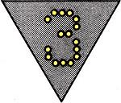 | |||
| G 2 a | Eine rechteckige gelbe Tafel mit weißem Rand und schwarzer Kennziffer | Beginn der Geschwindigkeitsbeschränkung | |
| 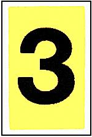 | |||
| G 2 b | eine weißleuchtende Kennziffer | ||
| 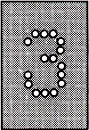 | |||
| G 3 | Eine rechteckige weiße Tafel mit schwarzem E | Ende der Geschwindigkeitsbeschränkung | Geschwindigkeitsbeschränkung ist jede Änderung der zulässigen Geschwindigkeit nach unten |
| 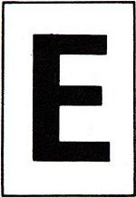 | |||
| G 4 | Eine rechteckige weiße Tafel mit schwarzem Rand und schwarzer Kennziffer | Beginn der Geschwindigkeitsbegrenzung | Zeigt Änderungen der zulässigen Geschwindigkeit nach oben an; kann auch anstelle von Signal G 3 verwendet werden |
| 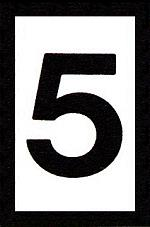 |
| Bezeichnung | Signalbild | Bedeutung | Erläuterung |
| Sh 1 | Eine quadratische gelbe Tafel mit waagerechtem grünen Streifen | Zwangshalt | Kennzeichnet Stellen, an denen bei Fahren auf Sicht an jedem Fall anzuhalten ist |
| 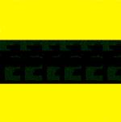 | |||
| Sh 2 | Eine rechteckige rote Tafel mit weißem Rand | Schutzhalt | Weiterfahrt ist unzulässig |
 | |||
| Sh 3 a | Mindestens 3 kurze akustische Zeichen schnell hintereinander | Nothalt | Der Zug ist auf kürzestem Weg anzuhalten |
 | |||
| Sh 3 b | Eine weiß-rot-weiße Fahne oder der Arm im Kreis bewegt | ||
 | |||
| Sh 3 c | Eine Laterne, möglichst rot abgeblendet, oder ein leuchtender Gegenstand im Kreis bewegt | ||
 | |||
| Sh 3 d | Ein rotes Blinklicht oder mehrere rote Lichter untereinander | ||
| 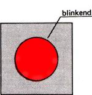 | |||
| Sh 4 | Eine rechteckige weiße Tafel mit schwarzem L | Läuten | Den örtlichen Gegebenheiten entsprechend sind akustische Warnsignale zu geben |
 | |||
| Sh 5 | Ein mäßig langer Ton oder Läutezeichen | Achtung | Signal Sh 5 wird gegeben, um Personen zu warnen |
 | |||
| Sh 6 | Ein rot-weißes Zeichen oder entsprechende Markierung im Gleisbereich | Grenzzeichen | Kennzeichnet die Grenze, bis zu der bei zusammenlaufenden Gleisen das Gleis besetzt werden darf |
| 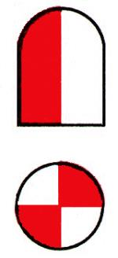 | |||
| Sh 7 | Eine rechteckige schwarze Tafel mit weißem H oder eine rechteckige weiße Tafel mit schwarzem H oder entsprechende Markierung im Gleisbereich | Haltetafel | Kennzeichnet die Stelle, an der die Spitze des Zuges halten soll |
 |
| Bezeichnung | Signalbild | Bedeutung | Erläuterung |
| R 1 | Ein mäßig langer Ton und senkrechte Bewegungen des Armes, bei Dunkelheit mit einer weißen Laterne | Wegfahren | Rangierbewegung vom Signalgebenden weg |
| 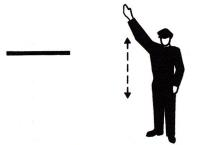 | |||
| R 2 | Zwei mäßig lange Töne und waagerechte langsame Bewegungen des Armes, bei Dunkelheit mit einer weißen Laterne | Herkommen | Rangierbewegung zum Signalgebenden hin |
| 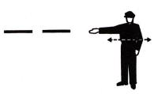 | |||
| R 3 | Drei kurze Töne und kreisförmige Bewegungen des Armes, bei Dunkelheit mit einer weißen Laterne | Rangierhalt | |
| 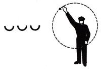 |
| Bezeichnung | Signalbild | Bedeutung | Erläuterung |
| St 1 | Eine quadratische blaue Tafel mit einem weißen S | Signalkontakt | Am Signal St 1 ist ein Signalkontakt zu betätigen |
 | |||
| St 2 | Eine quadratische blaue Tafel mit einem weißen W | Weichenkontakt | Am Signal St 2 ist die Weichensteuerung zu betätigen |
| St 3 | Eine quadratische, auf der Spitze stehende blaue Tafel mit schwarzem und weißem Rand und einem zerlegten weißen U | Ausschalten | Vom Signal St 3 an muß der Fahrstrom ausgeschaltet sein |
| 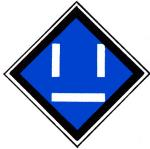 | |||
| St 4 | Eine quadratische, auf der Spitze stehende blaue Tafel mit schwarzem und weißem Rand und einem geschlossenen weißen U | Einschalten erlaubt | Vom Signal St 4 ab darf der Fahrstrom eingeschaltet werden |
 | |||
| St 5 | Eine quadratische, auf der Spitze stehende blaue Tafel mi schwarzem und weißem Rand und einem waagerechten weißen Streifen | Stromabnehmer abziehen | Vom Signal St 5 ab muß der Stromabnehmer abgezogen sein |
 | |||
| St 6 | Eine quadratische, auf der Spitze stehende blaue Tafel mit schwarzem und weißem Rand und einem senkrechten weißen Streifen | Stromabnehmer anlegen | Vom Signal St 6 ab darf der Stromabnehmer wieder angelegt sein |
| 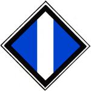 | |||
| St 7 | Eine quadratische blaue Tafel mit einem weißen T | Streckentrenner | Am Signal St 7 ist der Fahrstrom kurz abzuschalten |
| St 8 | Eine quadratische, auf der Spitze stehende blaue Tafel mit schwarzem und weißem Rand und einem auf der Spitze stehenden quadratischen weißen Rahmen mit innenliegendem weißen Quadrat | Halt für Fahrzeuge mit angelegtem Stromabnehmer | Fahrten über Signal St 8 hinaus sind für Fahrzeuge mit angelegtem Stromabnehmer unzulässig |
 |
| Bezeichnung | Signalbild | Bedeutung | Erläuterung |
| W 1 | Ein weiß leuchtender Winkel mit Spitze nach oben | Weiche steht für Fahrt geradeaus mit höchstens 15 km/h | Kraftschlüssige Endlage der beweglichen Weichenteile (Weiche ohne Verschluß) |
 | |||
| W 2 | Ein weiß leuchtender Winkel mit Spitze nach rechts | Weiche steht für Fahrt nach rechts mit höchstens 15 km/h | |
| W 3 | Ein weiß leuchtender Winkel mit Spitze nach links | Weiche steht für Fahrt nach links mit höchstens 15 km/h | |
| 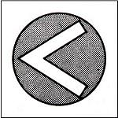 | |||
| W 11 | Ein weiß leuchtender Winkel mit Spitze nach oben und Basisbalken unten | Weiche steht für Fahrt geradeaus mit zulässiger Geschwindigkeit | Die beweglichen Teile der Weiche sind in der jeweiligen Endlage formschlüssig festgelegt (Weiche ist verschlossen) |
| 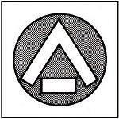 | |||
| W 12 | Ein weiß leuchtender Winkel mit Spitze nach rechts und Basisbalken links | Weiche steht für Fahrt nach rechts mit zulässiger Geschwindigkeit | |
| 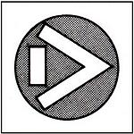 | |||
| W 13 | Ein weiß leuchtender Winkel mit Spitze nach links und Basisbalken rechts | Weiche steht für Fahrt nach links mit zulässiger Geschwindigkeit | |
 | |||
| W 14 | Ein weißer Winkel mit Spitze nach unten und Basisbalken oben auf einer quadratischen schwarzen Tafel | Weiche darf nicht aufgefahren werden | |
| Bezeichnung | Signalbild | Bedeutung | Erläuterung |
| Bü 0 | Ein schwarz-weiß schräg gestreiftes, rückstrahlendes Mastschild | Halt vor dem Bahnübergang; Weiterfahrt nur, wenn es die Verkehrslage erlaubt | Bü 0 zeigt an, daß die technische Sicherung des Bahnübergangs ausgefallen ist |
 | |||
| Bü 1 | Ein weißes Blinklicht über einem schwarz-weiß schräg gestreiften, rückstrahlenden Mastschild | Der Bahnübergang darf befahren werden | Bü 1 zeigt an, daß die technische Sicherung des Bahnübergangs ordnungsgemäß arbeitet |
 | |||
| Bü 2 | Eine rechteckige schwarze Tafel mit vier auf den Spitzen übereinander stehenden weißen Rauten | Ein Überwachungssignal ist zu erwarten | |
| Bezeichnung | Signalbild | Bedeutung | Erläuterung |
| So 1 | Eine quadratische weiße Tafel mit zwei schwarzen Punkten untereinander | Beginn einer Strecke mit Zugsicherung | Übergang vom Fahren auf Sicht zum Fahren auf Zugsicherung |
 | |||
| So 2 | Eine quadratische weiße Tafel mit zwei schwarzen Punkten untereinander und einem nach rechts steigenden roten Diagonalstreifen | Ende einer Strecke mit Zugsicherung | Übergang vom Fahren auf Zugsicherung zum Fahren auf Sicht |
 | |||
| So 3 | Ein schwarz-weißer Erkennungsstreifen | Standortkennzeichen | Gibt den Standort von Hauptsignalen an |
| So 4 | Ein gelb-weißes Mastschild | Auftragsschild | Gibt den Auftrag, am Signal H 0 unter Beachtung besonderer Anordnungen, die in einer Dienstanweisung festgelegt sind, vorbeizufahren |
 | |||
| So 5 | Eine quadratische gelbe Tafel mit grünem Diagonalkreuz | Begegnungsverbot — Anfang — | Bei Begegnungsverbot für bestimmte Fahrzeuge und Richtungen können Zusatzschilder verwendet werden |
 | |||
| So 6 | Eine quadratische gelbe Tafel mit grünem Rand | Begegnungsverbot — Ende — | |
 |